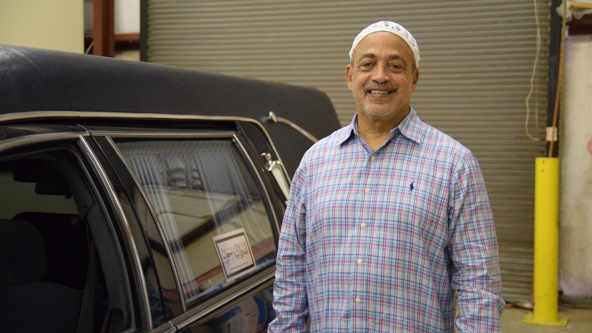
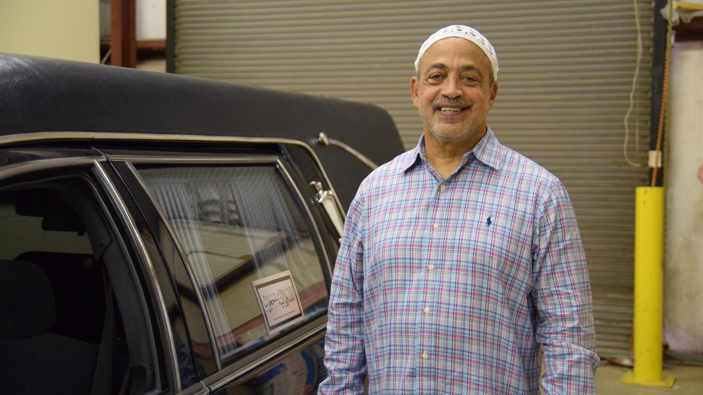

(@TasnimS) covers technology and business as the economy and innovation reporter at the National Public Radio member station WABE 90.1 FM in Atlanta. Prior to WABE in November 2014, she was a Kroc fellow at NPR and then spent two years at WFAE in Charlotte, covering criminal justice and hosting a podcast called ‘A Trifling Place’ about the city’s history and Southern culture. She grew up in Queens and graduated from Princeton's Class of 2011, where she was executive editor for multimedia at The Daily Princetonian. She helps direct and is a proud alumna of the Princeton Summer Journalism Program for low-income high school students, which is focused on diversifying college and professional newsrooms.
 
